        
    <header class="not-full-page">
        <div class="header-content">
            <div class="header-content-inner">
                <h2>Assembly</h2>
                <hr class="long text-left" />
                <p><em>in which we put it all together</em></p>
            </div>
        </div>
    </header>

    {% include section.html param="top" %}
                    <h3 class="section-heading">1. Select the assembly button tab</h3>
                    <ul>
                        <li>Click the "Assembly 1" tab on the bottom row</li>
                    </ul>
                    {% include tutorial-video.html path="videos/assembly/select_assembly" %}
    
    {% include section.html %}
                    <h3 class="section-heading">2. Insert parts</h3>
                    <ul>
                        <li>Select the "Insert" tool </li>
                        <li>Select the "Middle body"</li>
                        <li>Click inside the assembly to place the part</li>
                        <li>Repeat for the "Lower body" and "Nosecone"</li>
                        <li>Click the green check </li>
                    </ul>
                    {% include tutorial-video.html path="videos/assembly/insert_parts" %}
                    
    {% include section.html %}
                    <h3 class="section-heading">3. Mate the fuselage to the booster and fins</h3>
                    <ul>
                        <li>Select the "Fastened Mate" tool </li>
                        <li>Hover over the top of the booster and fins, then click when a disc appears</li>
                        <li>Hover over the <strong>inside</strong> of the fuselage, where the part gets wider</li>
                        <li>Click again, and you'll see the parts snap together</li>
                        <li>Click the green check </li>
                    </ul>
                    {% include tutorial-video.html path="videos/assembly/mate_booster_fuselage" %}
                    
    {% include section.html %}
                    <h3 class="section-heading">4. Mate the fuselage to the nosecone</h3>
                    <ul>
                        <li>Select the "Fastened Mate" tool </li>
                        <li>Hover over the top of the fuselage then click when a disc appears</li>
                        <li>Hover over the <strong>inside</strong> of the <em>nosecone</em>, where the part gets wider</li>
                        <li>Click again, and you'll see the parts snap together</li>
                        <li>Click the green check </li>
                    </ul>
                    {% include tutorial-video.html path="videos/assembly/mate_nosecone" %}
                    
    {% include section.html %}
                    <h3 class="section-heading">5. Export the booster and fins for 3D printing</h3>
                    <ul>
                        <li>Right click on the booster and fins</li>
                        <li>Select "Export..."</li>
                        <li>Select <strong>STL</strong> from the "Format" list</li>
                        <li>Click OK</li>
                    </ul>
                    {% include tutorial-video.html path="videos/assembly/export_booster_and_fins" %}
                    
    {% include section.html %}
                    <h3 class="section-heading">6. Export the fuselage for 3D printing</h3>
                    <ul>
                        <li>Right click on the fuselage</li>
                        <li>Select "Export..."</li>
                        <li>Select <strong>STL</strong> from the "Format" list</li>
                        <li>Click OK</li>
                    </ul>
                    {% include tutorial-video.html path="videos/assembly/export_fuselage" %}
                    
    {% include section.html %}
                    <h3 class="section-heading">7. Export the nosecone for 3D printing</h3>
                    <ul>
                        <li>Right click on the nosecone</li>
                        <li>Select "Export..."</li>
                        <li>Select <strong>STL</strong> from the "Format" list</li>
                        <li>Click OK</li>
                    </ul>
                    {% include tutorial-video.html path="videos/assembly/export_nosecone" %}
                    
    {% include section.html %}
                    <h3 class="section-heading">8. 3D print the files</h3>
                    <ul>
                        <li>Printing will take about 3 hours</li>
                        <li>You'll also need a length of flame-resistant string and either a streamer or parachute:
                        <br /><a href="img/tutorial/rocket_parts.jpg">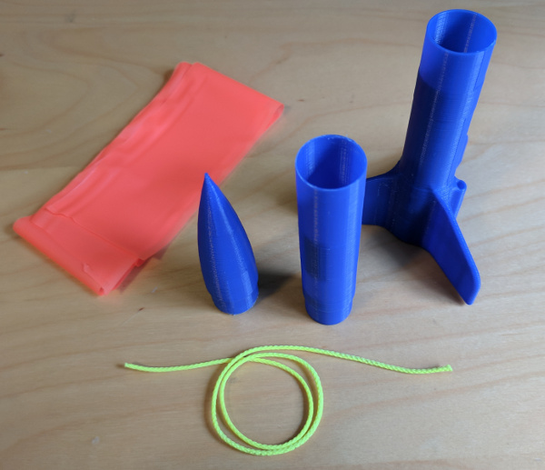</a></li>
                    </ul>
                    
    {% include section.html %}
                    <h3 class="section-heading">9. Start assembling the rocket</h3>
                    <ul>
                        <li>Thread a flame-resistant string or shock cord through the tube inside the fuselage
                        <br /><a href="img/tutorial/rocket_thread_string.jpg">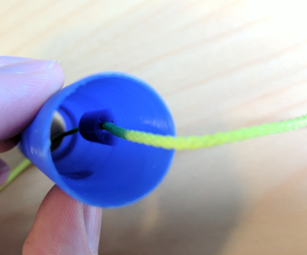</a></li>
                    </ul>
    {% include section.html %}
                        
                    <h3 class="section-heading">10. Tie the string off on the bottom end with two knots to keep it from coming out</h3>
                    <ul style="list-style: none;">
                        <li><a href="img/tutorial/rocket_thread_tie.jpg">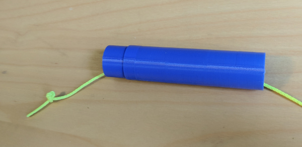</a></li>
                    </ul>
    {% include section.html %}
                        
                    <h3 class="section-heading">11. Tie the other end around the bar in the nosecone</h3>
                    <ul style="list-style: none;">
                        <li><a href="img/tutorial/rocket_thread_nosecone1.jpg">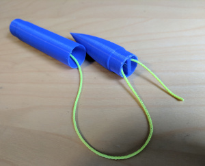</a>
                    <a href="img/tutorial/rocket_thread_nosecone2.jpg">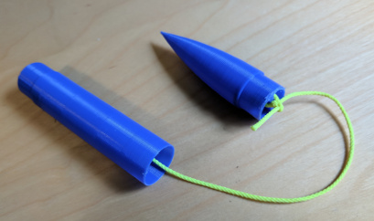</a></li>
                    </ul>
                    
                    
       
       
       
       
       
       
       
       
       
       
       
       
       
       
       
       
                    
                    
                    
                    
    {% include section.html %}
                    <h3 class="section-heading">12. Push the fuselage into the lower body.  It should be a very tight fit to keep it from coming loose in flight.</h3>
                    <ul style="list-style: none;">
                        <li><a href="img/tutorial/rocket_stage_connect1.jpg">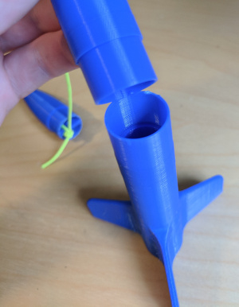</a>
                        <a href="img/tutorial/rocket_stage_connect2.jpg">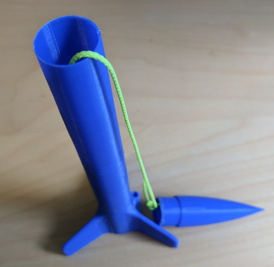</a></li>
                    </ul>
                    
                    
    {% include section.html %}
                    <h3 class="section-heading">13. Tie a streamer or parachute to the string</h3>
                    <ul style="list-style: none;">
                        <li><a href="img/tutorial/rocket_thread_streamer.jpg">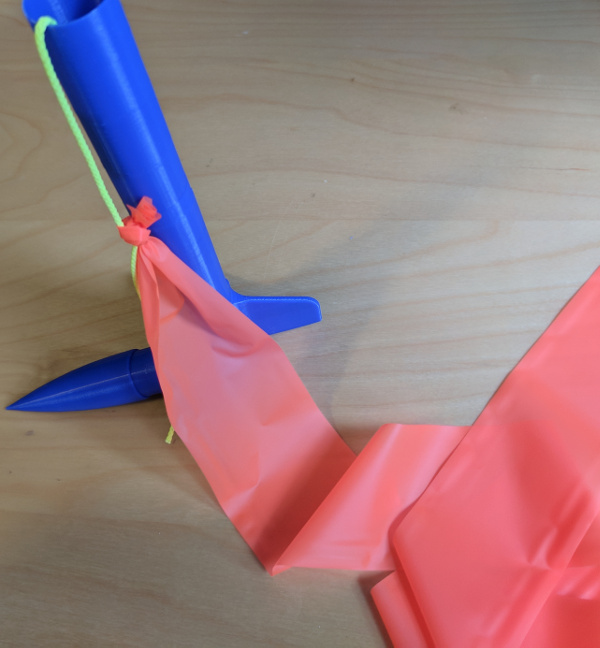</a></li>
                    </ul>
                                    


    {% include section.html %}
                    <h3 class="section-heading">14. Roll the streamer and push it into the fuselage</h3>
                    <ul style="list-style: none;">
                        <li><a href="img/tutorial/rocket_streamer_roll.jpg">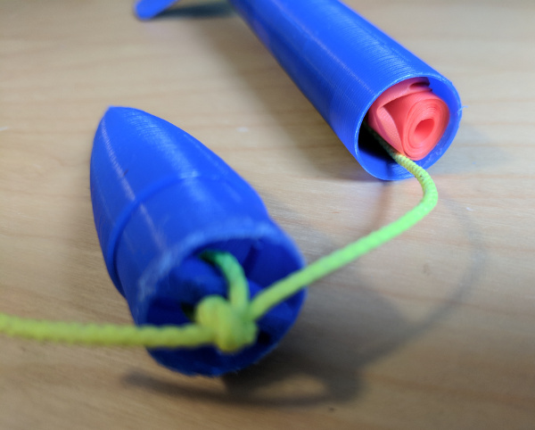</a></li>
                    </ul>
                    
    {% include section.html %}
                    <h3 class="section-heading">15. Slip the nosecone on.  It should be a <strong>loose fit</strong> so that the ejection charge will pop it off.</h3>
                    <ul style="list-style: none;">
                        <li><a href="img/tutorial/rocket_assembled.jpg">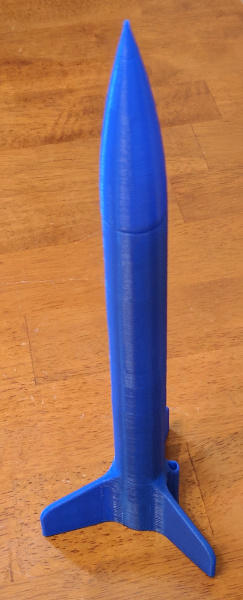</a></li>
                    </ul>
                    
    {% include section.html %}
                    <h3 class="section-heading">16. Load an engine (A, B, or C-class)</h3>
                    <ul style="list-style: none;">
                        <li><a href="img/tutorial/rocket_engine_load.jpg">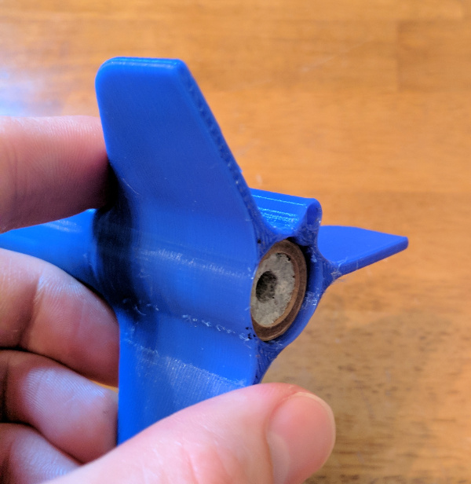</a></li>
                    </ul>
                        
    {% include section.html %}                    
                    <h3 class="section-heading">17. Go flying!</h3>
                    {% include tutorial-video.html path="videos/assembly/launch" %}
                    

    {% include section.html param="bottom" %}
    
